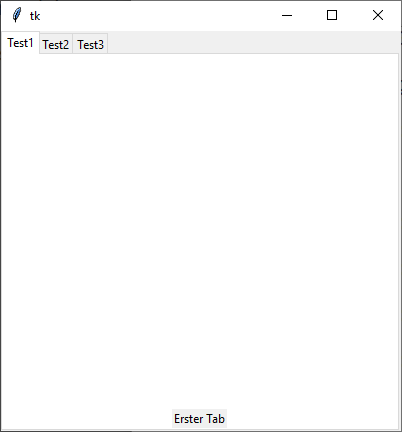

ttk.Notebook
ttk.Notebook erzeugen
nb = ttk.Notebook(parent, Optionen)
| Optionsname | Beschreibung |
|---|---|
| height, width | Höhe, Breite in Pixeln |
| padding | Extra Platz um das Notebook, Anzahl der Parameter bestimmen, welcher Platz gemeint ist, es sind maximal 4 Angaben erlaubt: links-oben-rechts-unten oder links-oben/unten-rechts oder horizontal-vertikal oder einfach nur Randplatz |
ttk.Notebook kennt die Standardoptionen: class_, cursor, style und takefocus
Notebook Tabs
Die folgende Tabelle zeigt die Tab-Optionen. Diese werden bei nb.add(…) angegeben, siehe unten:
| Optionsname | Beschreibung |
|---|---|
| state | tk.NORMAL, tk.HIDDEN (versteckt) oder
tk.DISABLED |
| sticky | Positionierung: Kombinationen aus tk.N,
tk.S, tk.W und tk.E |
| padding | Platz zwischen Notebook und Tab-Fenster |
| text | Titel des Tabs |
| image | Bild im Titel |
| compound | Anordnung von Text und Bild im Titelbereich, wenn beides vorhanden ist. Siehe Labeloptionen |
| underline | Positiver ganzzahlige Index, der den zu unterstreichenden Buchstaben referenziert. |
Das folgende Programm stellt ein Notebook vor:
import tkinter as tk
from tkinter import ttk
class A(tk.Tk):
def __init__(self):
super().__init__()
self.geometry('400x400')
self._createWidgets()
def _createWidgets(self):
nb = ttk.Notebook(self)
nb.pack(fill=tk.BOTH, expand=tk.YES)
f = ttk.Frame(nb, relief=tk.SUNKEN)
ttk.Label(f, text='Erster Tab').pack(fill=tk.BOTH, expand=tk.YES)
nb.add(f, text='Test1', sticky=tk.S)
f = ttk.Frame(nb, relief=tk.SUNKEN)
ttk.Label(f, text='Zweiter Tab').pack(fill=tk.BOTH, expand=tk.YES)
nb.add(f, text='Test2', sticky=tk.N+tk.S, padding=5)
f = ttk.Frame(nb, relief=tk.SUNKEN)
ttk.Label(f, text='Dritter Tab').pack(fill=tk.BOTH, expand=tk.YES)
nb.add(f, text='Test3', padding=5)
if __name__ == '__main__':
window = A()
window.mainloop()Notebook-Methoden
tabId:
- Nummer: ein Index zwischen 0 und der Anzahl der Tabs
- name: Tabname (s.
nb.tabs() @x,y: Eine Position'current': der aktuell hervorgehobene Tab'end': nur fürnb.index(), liefert dort die Anzahl der Tabs zurück
| Funktion | Parameter | Rückgabewert | Beschreibung |
|---|---|---|---|
| nb.add(child, optionen) | child: Widget wie etwa ein Frame, optionen: Tab-Optionen |
- | child wird als neuer Tab angehängt. War der Tab dort lediglich versteckt, dann
wird er wieder an der ursprünglichen Stelle sichtbar |
| nb.enable_traversal() | - | - | Fügt ergänzende Tasturbindungen hinzu: Strg-Tab: Nächster Tab,
Shift-Strg-Tab: vorheriger Tab, Alt-X wählt einen Tab aus, der mit text
und underline entsprechend markiert wurde. x ist dann der unterstrichene Buchstabe |
| nb.forget(tabId) | tabId | - | Tab wird entfernt |
| nb.hide(tabId) | tabId | - | Versteckt den Tab mit gegebener ID. Kann mit add(…) wieder sichtbar gemacht werden |
| nb.identify(x, y) | Position | Name eines Tabs oder leerer String | Gibt den Namen eines Tabs an der Position zurück, oder einen leeren String. (TODO: Zur Zeit nicht vollständig unterstützt) |
| nb.index(tabId) | tabId | Index oder Anzahl | Zu einer gegebenen tabId wird der Index des Tabs zurückgegeben.
Der String 'end' fragt die Anzahl der Tabs ab |
| nb.insert(tabId, child,optionen) | tabId, child: Widget, optionen: Tab-Optionen | - | Fügt einen neuen Tab an einer angegebenen Position ein. Ist der Tab schon vorhanden, dann wird er an die entsprechnde Position verschoben. |
| nb.select(tabId) | tabId (optional) | Nichts oder Fenstername in Tcl/Tk Schreibweise | Ohne Argument: Fenstername wird zurückgegeben, Mit tabId wird dieser Tab ausgewählt |
| nb.tab(tabId, option=None, …) | tabId, option: Tab-Option als Optionsname oder Schlüssel-Wert-Paare | nichts, Wert oder Dictionary | Setzt Tab-Optionen für einen Tab. Kann eine Option abfragen: option='text' gibt
den Wert zurück. Ohne Optionen/Keyword liefert die Funktion ein Dictionary mit allen
gesetzten Optionen |
| nb.tabs() | - | Liste von Fensternamen in Tcl/Tk-Schreibweise | Gibt eine Liste von Tab-Fensternamen zurück. Dieses ist zur Zeit die einzige Möglichkeit, an den Tabnamen eines Tabs zu kommen. |
Es werden ferner die Standardmethoden:
- Konfigurationsmethoden:
cget(…)undconfigure(…) - Sonstige Methoden:
identify(…),instate(…)undstate(…)
unterstützt.
Virtuelle Ereignisse
Notebook kennt das virtuelle Ereignis '<<NotebookTabChanged>>' -- ein neuer Tab wurde ausgewählt.